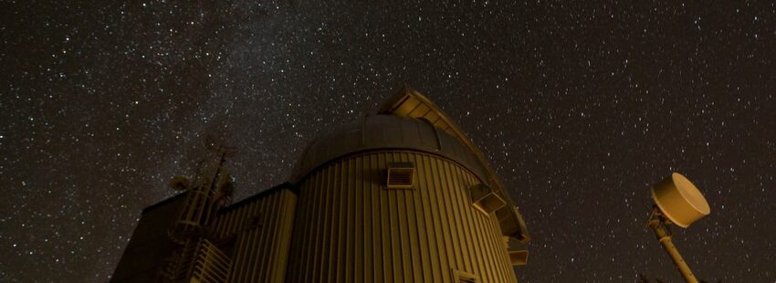
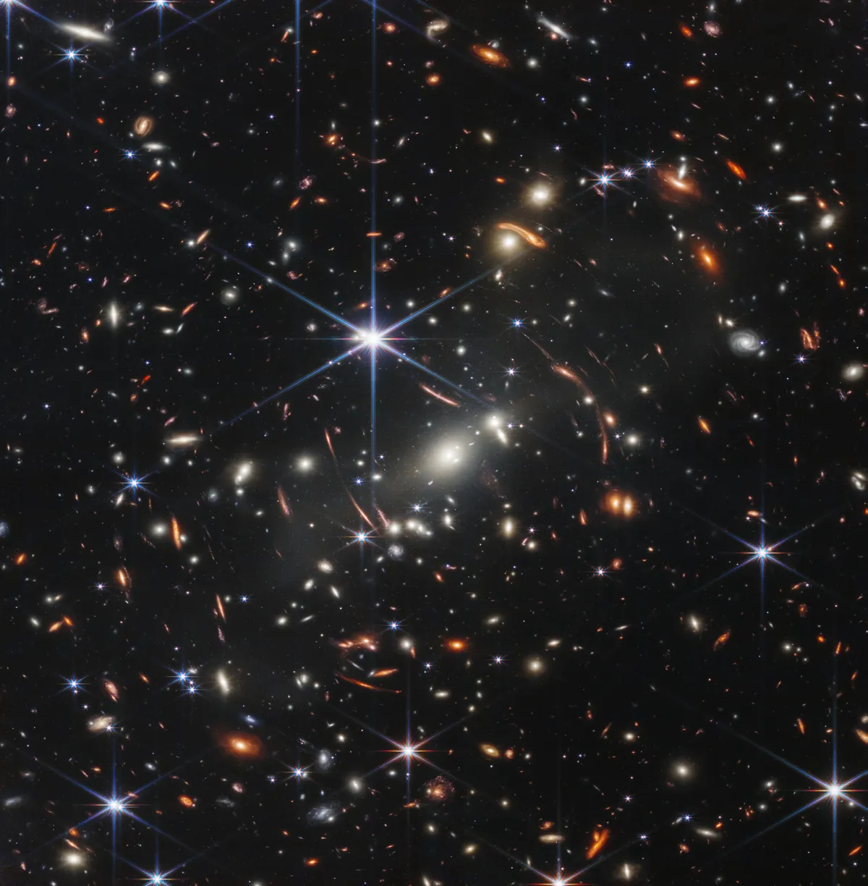

Por definição, a astronomia estuda os diferentes corpos e objetos celestes que fazem parte do Universo, dentre os quais se destacam:
Estrelas;
Luas;
Aglomerados de estrelas;
Planetas;
Meteoritos;
Asteroides;
Galáxias;
Nebulosas.
A ciência astronômica investiga a estrutura do Universo e de cada um dos diferentes corpos celestes que dele fazem parte, a forma como eles se originam e se desenvolvem, sua interação e os fenômenos por eles provocados ou dos quais esses mesmos objetos resultam. Para isso, utiliza-se de conceitos e formulações de outras disciplinas que são tão importantes quanto a astronomia para a compreensão do cosmos, como a Física, a Matemática, a meteorologia, a Química e até mesmo a Biologia.
Veja abaixo alguns exemplos de temas abordados nos estudos da astronomia:

Origem do Universo;
Surgimento dos planetas;
Cálculo de distâncias astronômicas;
Determinação da idade e composição química dos corpos celestes;
Sistema Solar;
Via Láctea, outras galáxias e fenômenos a elas associados;
Exoplanetas e outros corpos que se encontram fora do Sistema Solar;
Nascimento, evolução e morte das estrelas;
Meio interestelar;
Origem e evolução dos buracos negros.